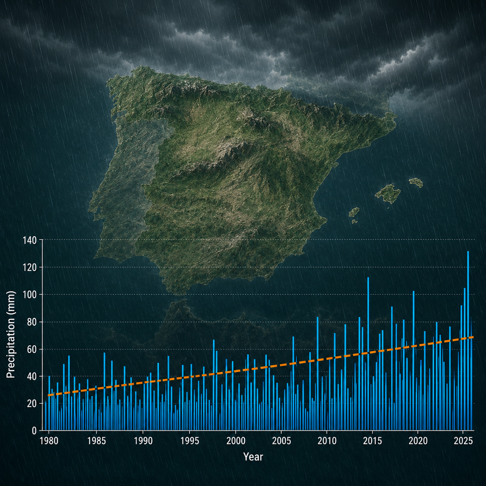
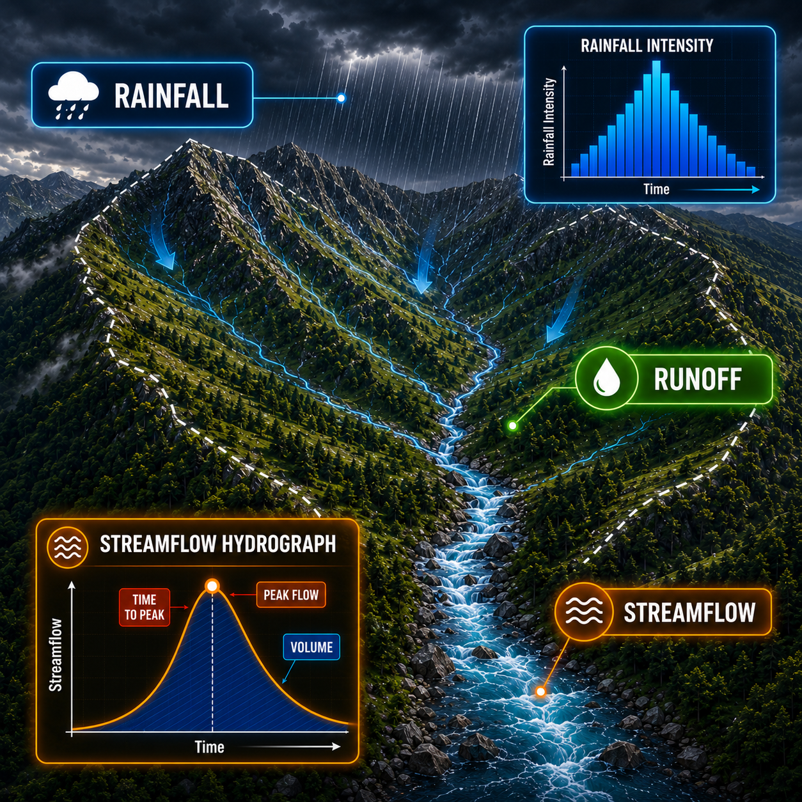
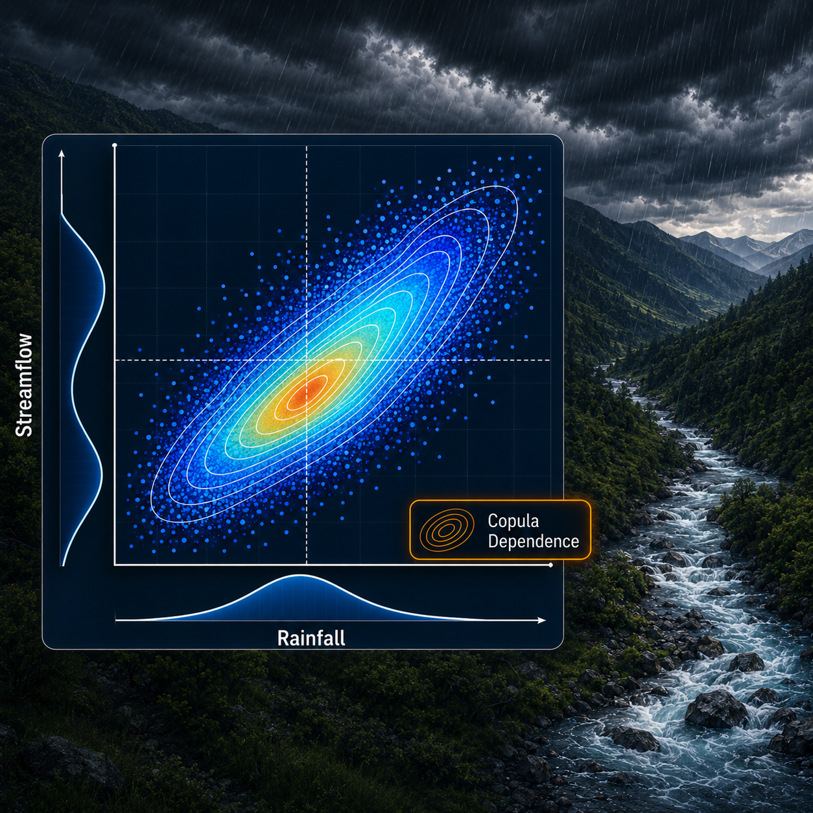
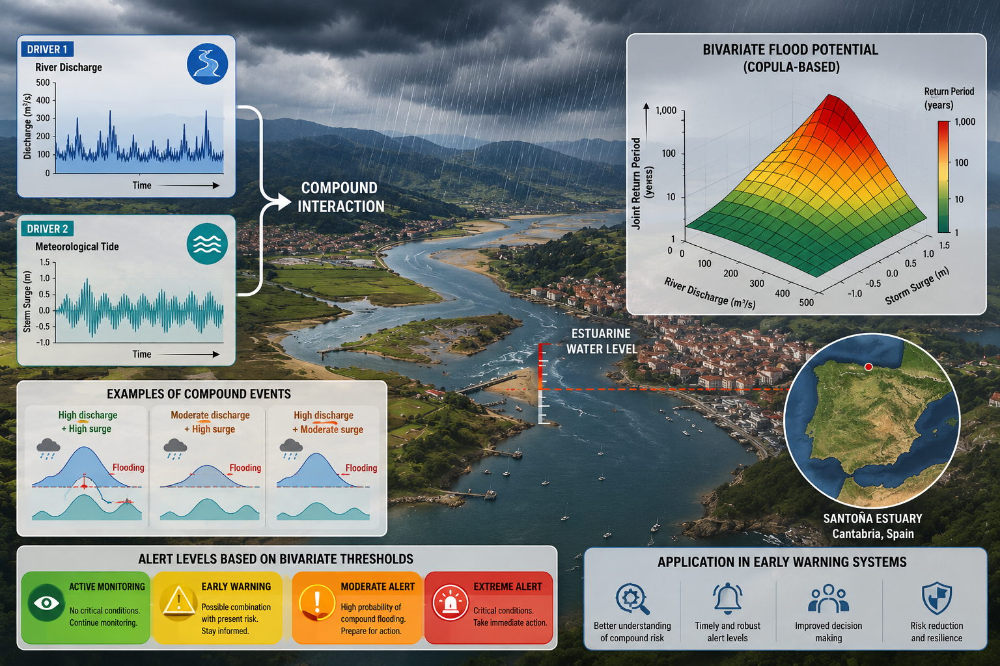

Diego Urrea
Méndez
About Me

I am a Civil Engineer graduated from the Escuela Colombiana de Ingeniería Julio Garavito, and hold a Master's degree in Integrated Water Systems Management from the Universidad de Cantabria (Spain, 2019-2020), where I received recognition as the student with the best academic record.
Since 2015, I have worked in hydraulics and hydrology consulting, taking on roles as a specialized design engineer and project coordinator in the design of hydraulic infrastructure, sanitation systems, wastewater treatment plants, road drainage, flood modeling, and vulnerability analysis.
Currently, I am developing my career as a predoctoral researcher at the Instituto de Hidráulica Ambiental (IHCantabria). My research focuses on critical areas for multivariate and non-stationary hydrological risk management.
Core Research Capabilities

Climate Extremes & Future Risk
Analyzing extreme rainfall, flooding, and hydroclimatic hazards using Extreme Value Theory, climate projections, and large-scale environmental datasets to quantify future risk.

Compound & Multivariate Hazards
Modeling compound and multivariate hazards through advanced dependence structures and joint probability frameworks to estimate risk under interconnected environmental processes.

Environmental AI & Uncertainty Modeling
Applying Gaussian Processes, Bayesian inference, and data-driven models to reconstruct, predict, and quantify uncertainty in complex hydroclimatic systems.

Scientific Visualization & Decision Support
Developing scientific visualizations, geospatial analyses, and decision-support tools that communicate environmental risk clearly to researchers, practitioners, and stakeholders.
Computation & AI Toolkit
Programming languages, spatial tools, and artificial intelligence environments integrated to support scientific computation, data visualization, and statistical modeling.
Python
Climate Analysis & MLMain language used for processing ERA5 climate projections, training Gaussian Process Regression (GPR) models, and implementing Bayesian inference.
R Environment
Statistical ModelingApplied for multivariate dependence modeling using Vine Copulas, extreme value calculations, and ggplot publication graphics.
Julia
High-Performance FittingSelected for fast statistical model fitting, non-stationary analysis, and adjusting mixed extreme distributions.
GIS & Hydrology
Spatial AnalysisUtilized QGIS for catchment delineation, spatial hydrological processing, and creating high-quality maps for scientific papers.
AI Assistants & Copilots
Research AccelerationLeveraged as a daily programming copilot to write, debug, and optimize complex hydrological scripts, review code syntax errors, and accelerate writing workflows.
Where to Find Me
Professional background, experience, and academic trajectory.
GitHub
Repositories, notebooks, and hydrological analysis scripts.
Research
Peer-reviewed papers, preprints, and full publication archive.
Interested in Collaboration?
Available for interdisciplinary research projects, data analysis consulting, and academic partnerships in climate resilience.
Get in Touch